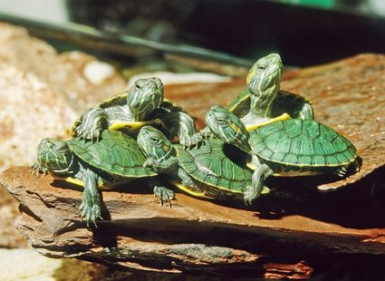
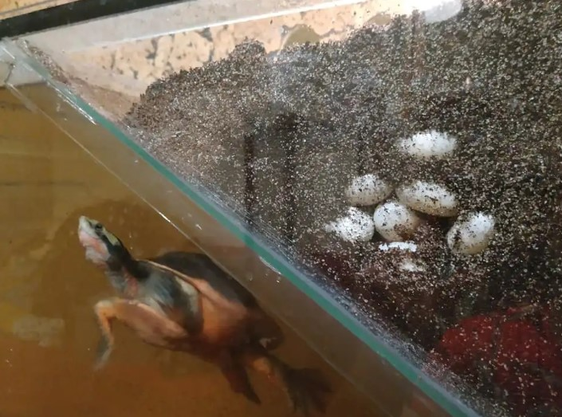

W naszej hodowli żółwi wodnych nieustannie dążymy do podnoszenia standardów hodowli i zaangażowania się w różne inicjatywy związane z ochroną tych fascynujących stworzeń. Chcemy podzielić się z tobą naszymi sukcesami, wydarzeniami oraz osiągnięciami w świecie hodowli i ochrony żółwi.
Regularnie witamy nowe żółwie w naszej hodowli. To dla nas zawsze wyjątkowe chwile, kiedy możemy powitać kolejne osobniki do naszej rodziny. Obserwuj naszą galerię zdjęć, aby zobaczyć naszych najnowszych podopiecznych i poznać ich historie.
nasze nowoprzybyłe żółwiki
Nasze wysiłki w dziedzinie hodowli przynoszą owoce. Chlubimy się licznymi sukcesami hodowlanymi, w tym udanymi lęgami i rosnącą populacją żółwi w naszej hodowli. Zobacz zdjęcia młodych żółwi, które urodziły się w naszym akwarium.
jaja żółwi w inkubatorze